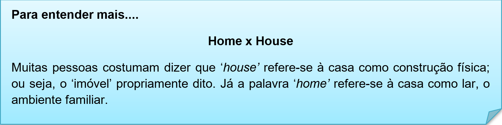
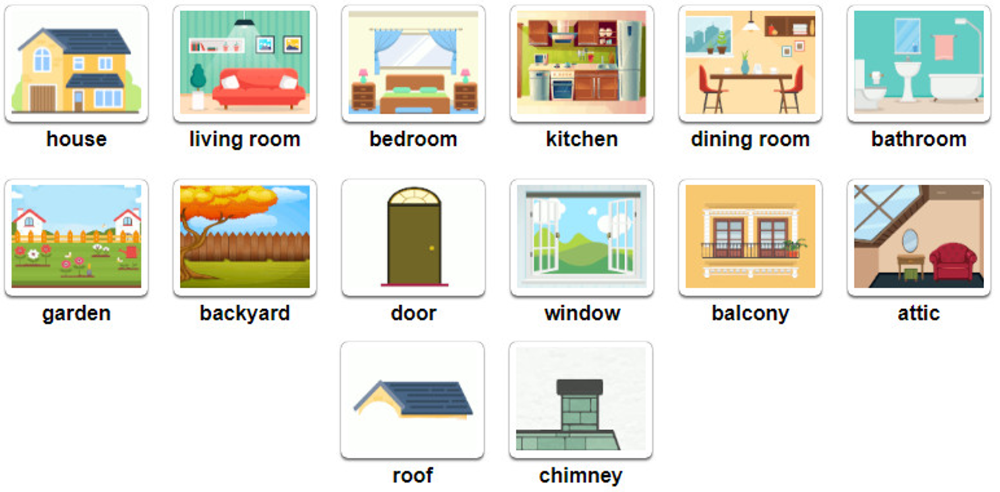
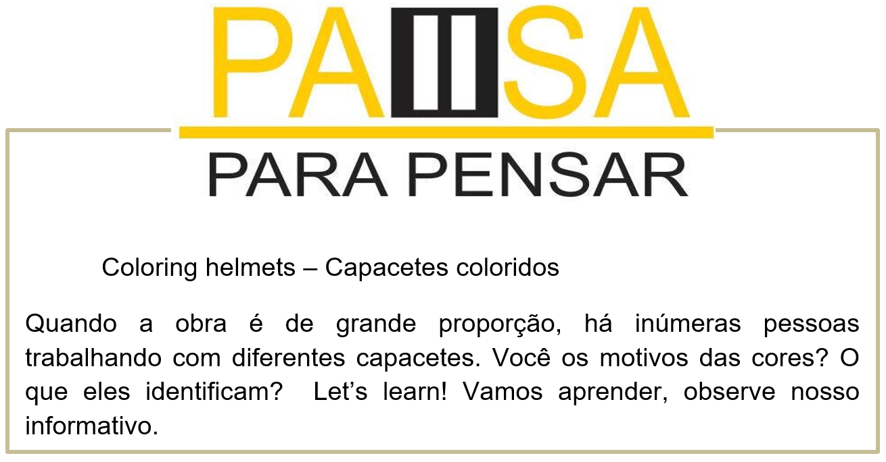
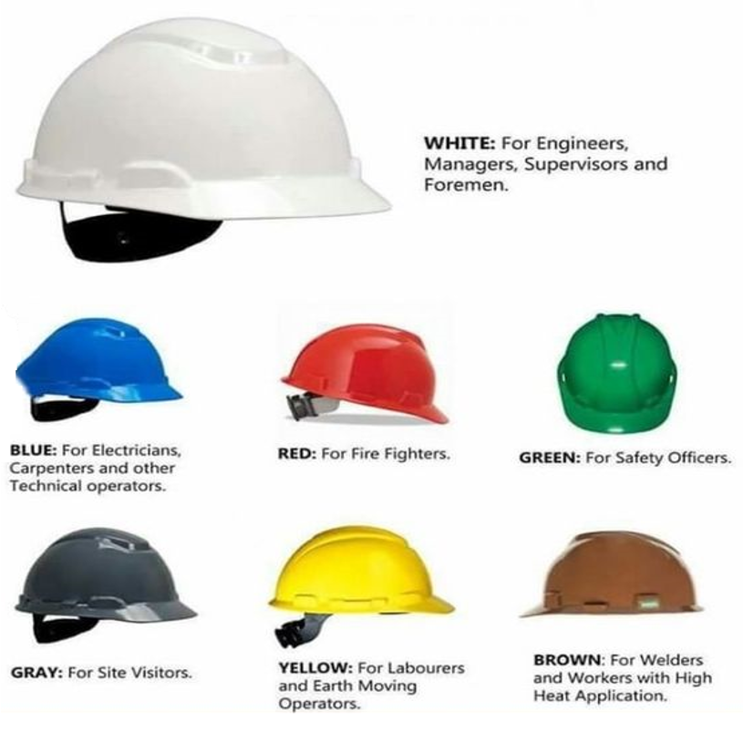
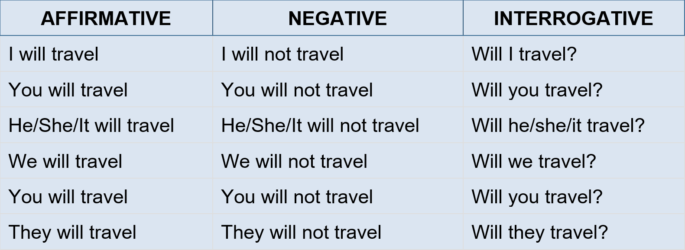
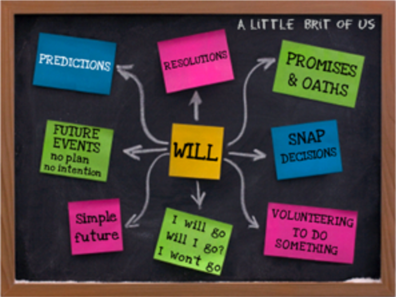

Capítulo 1: Construction, Wood and Furniture - Construção, Madeira e Mobiliário
What are civil works? O que são os trabalhadores civis?
Civil Work is primarily that work which is fixed to the house and cannot be changed easily. It includes tiling, bathroom renovation, breaking any walls, fixing the kitchen platform, electrical work, etc. It is usually more messy and tedious compared to the other work such as furniture and kitchen.
Vamos expandir nosso vocabulário sobre construção civil. O texto acima descreve a função de um trabalhador civil. Quais funções ele exerce. As palavras grifadas são parte internas de um casa. Vamos ver a tradução literal do texto.
Trabalho civil é primeiramente aquele que conserta casas que não podem ser facilmente modificadas. Isso inclui telhados, renovação de banheiros, demolição de muros/paredes, consertos de cozinhas, trabalho elétrico etc. Isso é mais que bagunça e tédio comparado a outras profissões como mobiliário e cozinha.

Esse texto apresenta uma série de elementos gramaticais e vocabulário em expansão. Vamos ampliar nossos estudos com os dicionário ilustrados, pictionary.
Contextualizando - Materiais de construção
brick > tijolo
cement > cimento
concrete > betão
glass > vidro
gravel > gravilha
marble > mármore
metal > metal
plastic > plástico
sand > areia
slate > ardósia
stone > pedra
wood > madeira
Types of constructions
The four major types of construction include residential building, institutional and commercial building, specialized industrial construction, infrastructure and heavy construction
• Residential Building – prédios residenciais
• Institutional and Commercial Building – prédios comerciais
• Specialized Industrial Construction – construções industriais
• Infrastructure and Heavy Construction – grandes construções pesadas
Parts of the house – Partes de uma casa

Cada cor de capacete identifica uma posição/função dentro da obra
Reconstruindo conhecimento – Futuro simples - Will
O Simple Future (Futuro Simples), é um tempo verbal usado para expressar ações futuras que irão ocorrer, ou seja, que ainda não aconteceram.
• Usos do will
O Simple Future Tense pode indicar uma decisão que está sendo tomada no ato da fala. Além disso, pode expressar um pedido, uma promessa, um aviso, um convite ou uma oferta.
• Formação
A formação de frases de futuro com will na forma afirmativa segue a seguinte estrutura:
Sujeito + will + verbo principal no infinitivo sem o to + complemento
• Exemplos:
They will buy a new house. (Eles comprarão uma casa nova.)
We will go out tonight. (Nós sairemos hoje à noite.)
Negative form - A formação de frases de futuro com will na forma negativa segue a seguinte estrutura:
Sujeito + will + not + verbo principal no infinitivo sem o to + complemento
Exemplos:
They will not buy a new house. (Eles não comprarão uma casa nova.)
We will not go out tonight. (Nós não sairemos hoje à noite.)
A forma negativa também pode ser utilizada na forma contraída. Para isso, basta usar won't no lugar de will not.
Exemplos:
I will not visit my cousin tomorrow. = I won't visit my cousin tomorrow. (Não visitarei minha prima amanhã.)
Interrogative form - A formação de frases de futuro com will na forma interrogativa segue a seguinte estrutura:
Will + sujeito + verbo principal no infinitivo sem o to + complemento
Exemplos:
Will they buy a new house? (Eles comprarão uma casa nova?)
Will we go out tonight? (Nós sairemos hoje à noite?)
Veja abaixo uma tabela com a conjugação do futuro com will, onde o verbo principal é to travel (viajar)

Aplicando ao nosso vocabulário – construção
• I will build a new house. (Eu construirei uma nova casa.)
• My father will fix my bathroom. (Meu pai consertará meu banheiro.)
• We will not fix the house this year. (Nós não vamos consertar a casa este ano.)
• He will use red helmet. (Ele usará o capacete vermelho.)
• The civil worker will build fours houses next year. (O trabalhador civil construirá quatro casas ano que vem.)
Assista ao vídeo sobre o uso do futuro wil
O que aprendi
• Nesta unidade aprendemos o vocabulário de construções e partes internas e externas de uma casa/construção;
• Aprendemos sobre as cores e os usos dos capacetes;
• Na gramática, aplicamos o futuro simples will
• Na aplicação de palavras vimos as diferenças entre as palavras house e home.
Observe o quadro resumo do uso e formação do futuro simples WILL.
Praticando
Leia o texto com atenção e responda as questões em português.
1 A house is a place that is built for people to live in. It serves as a home
2 basically for families. There are many different parts of a house. These parts
3 can be different according to the climate, location, culture, function of the
4 house, number of people living in, wealth of the residents etc. For example
5 some houses may have a chimney, balcony, swimming pool, garden, garage 6 or roof but some others may not.
a. O que é uma house, de acordo com o texto? (Linha 1)
b. De acordo com o texto as partes da house podem variar, porquê? (Linha 3)
c. Quais itens uma house pode ter? (Linha 5)
O Texto anterior cita a palavra cultura. Todos devemos respeitar as diferenças e cultura de outros países e pessoas.
Assista ao vídeo Sesi Educa sobre esse tema e escreva suas ideias e opiniões sobre o tema.
Pense na sua home, o que você fará de melhorias nela? Use o futuro WILL para escrever seus planos.
• I will paint my home. > Eu pintarei minha casa.
• _______________________________________________